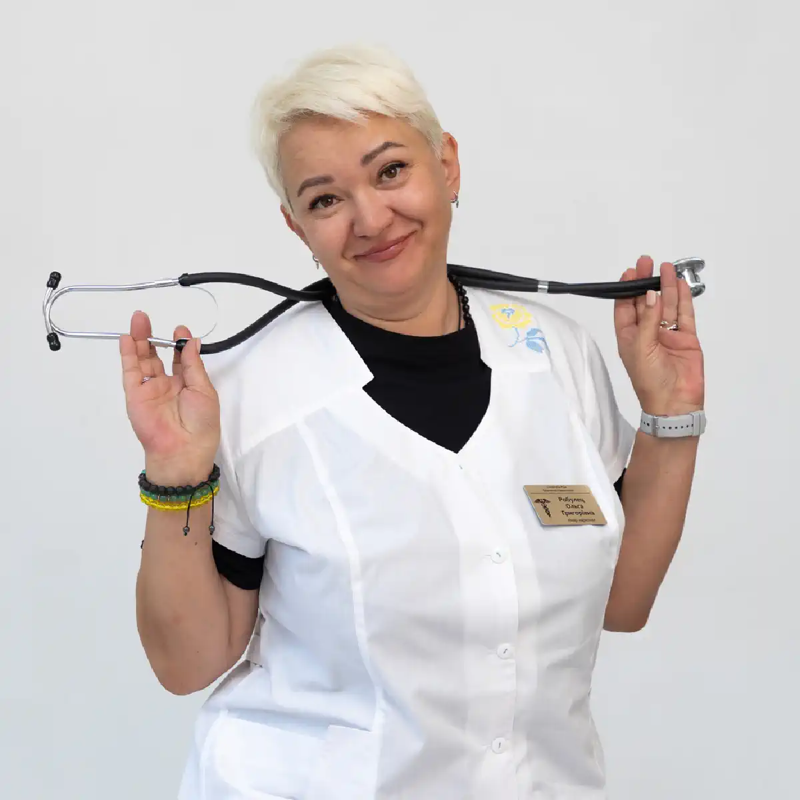

+38(068)
79 72 782
+38(068)
79 72 782Лечение наркомании в Одессе
Путь к жизни без зависимости


Бесплатная консультация, работаем круглосуточно 24/7
Путь к жизни без зависимости

Дата написания: Обновляется...
Последнее обновление: Обновляется...
Лечение наркомании в Одессе — это комплексная медицинская и психологическая помощь, направленная на прекращение употребления наркотических веществ, снятие интоксикации, стабилизацию физического состояния, восстановление психики и снижение риска повторных срывов. Наркотическая зависимость разрушает здоровье, поведение, отношения с близкими, работу, учёбу и качество жизни человека. Чем дольше откладывается лечение, тем выше риск тяжёлых осложнений, абстинентного синдрома, психоэмоциональных нарушений и социальной изоляции.
Наркомания — это не слабость характера и не отсутствие силы воли, а серьёзное заболевание, которое требует профессионального подхода. Самостоятельные попытки прекратить употребление часто заканчиваются срывами, особенно если зависимость сопровождается ломкой, тревожностью, бессонницей, депрессией, физическим истощением или сильной психологической тягой. Лечение наркотической зависимости должно быть комплексным. Оно может включать консультацию нарколога, детоксикацию, снятие ломки, медикаментозную поддержку, психотерапию, стационарное или амбулаторное лечение, реабилитацию и профилактику срывов. Программа подбирается индивидуально, с учётом состояния пациента, вида употребляемых веществ, длительности зависимости, психоэмоционального состояния и мотивации к выздоровлению.
Наркомания — это хроническая зависимость от психоактивных веществ, при которой человек теряет контроль над употреблением и продолжает принимать наркотики, несмотря на вред для здоровья, семьи, работы, учёбы и собственной жизни. Зависимость развивается постепенно: сначала употребление может восприниматься как способ расслабиться, получить новые ощущения, уйти от стресса или эмоциональной боли, но со временем формируется сильная психологическая и физическая тяга.
Начинать лечение зависимости стоит с консультации нарколога. Специалист оценивает состояние пациента, уточняет длительность употребления, вид веществ, наличие ломки, интоксикации, хронических заболеваний, психических нарушений и предыдущего опыта лечения. Это помогает определить, какая помощь нужна в первую очередь: детоксикация, снятие ломки, медикаментозная поддержка, стационар, психотерапия или реабилитация.
Первый этап лечения часто направлен на стабилизацию физического состояния. Если у человека есть наркотическая интоксикация, ломка, выраженная слабость, тревожность, бессонница, боли в теле, тошнота, скачки давления или сильное психическое напряжение, важно не откладывать обращение к врачу. После снятия острого состояния необходимо продолжить лечение, потому что физическое облегчение не устраняет психологическую зависимость.
Основные признаки наркотической зависимости могут проявляться постепенно. На ранних этапах человек часто скрывает употребление, отрицает проблему и уверяет близких, что контролирует ситуацию. Однако со временем изменения становятся заметнее. К тревожным признакам относятся резкие перепады настроения, скрытность, раздражительность, апатия, потеря интереса к учёбе, работе, семье и прежним увлечениям. Человек может менять круг общения, пропадать без объяснений, просить деньги, избегать разговоров, нарушать обещания и всё чаще конфликтовать с близкими.
Физические признаки могут включать слабость, нарушение сна, снижение или повышение аппетита, резкое похудение, потливость, тремор, расширенные или суженные зрачки, бледность, тошноту, боли в теле, нестабильное давление, учащённое сердцебиение и общее ухудшение самочувствия. Психологические признаки включают тревожность, депрессивное состояние, агрессию, эмоциональную нестабильность, навязчивое желание употребить, потерю контроля и неспособность отказаться от вещества даже при понимании последствий. Если человек не может остановиться самостоятельно, ему нужна профессиональная помощь.
Причины развития наркомании могут быть разными. У одних людей зависимость формируется на фоне психологических проблем, стресса, тревожности, депрессии, одиночества, низкой самооценки или травматического опыта. У других — под влиянием окружения, любопытства, желания уйти от проблем или попытки справиться с внутренним напряжением. Большую роль играет эмоциональное состояние. Наркотики могут восприниматься как способ временно почувствовать облегчение, расслабление, уверенность или уход от болезненных переживаний. Но со временем эффект становится короче, тяга усиливается, а жизнь всё больше начинает зависеть от вещества.
Также важную роль в развитии наркотической зависимости играют социальные факторы: неблагоприятное окружение, доступность наркотиков, отсутствие поддержки, семейные конфликты, трудности адаптации, потеря работы или проблемы в отношениях. Чем дольше человек остаётся без профессиональной помощи, тем сильнее зависимость влияет на его поведение, здоровье, эмоциональное состояние и качество жизни. Постепенно употребление начинает разрушать не только организм, но и отношения с близкими, работу, мотивацию и способность принимать осознанные решения.
Лечение наркотической зависимости должно учитывать не только сам факт употребления, но и причины, которые привели к развитию болезни. Именно поэтому после детоксикации особенно важны психотерапия, работа с мотивацией, восстановление режима жизни и профилактика срывов. Такой подход помогает не просто временно прекратить употребление, а сформировать устойчивую трезвость и вернуться к полноценной жизни.
Наркотическая зависимость опасна тем, что постепенно разрушает весь организм и психику. Употребление психоактивных веществ может приводить к истощению нервной системы, нарушению сна, тревожности, депрессии, агрессивному поведению, снижению памяти, ухудшению концентрации и потере контроля над поступками. Страдают сердце, сосуды, печень, почки, желудочно-кишечный тракт, иммунная система и головной мозг. При длительном употреблении повышается риск тяжёлой интоксикации, инфекционных осложнений, психозов, судорог, передозировки, травм и опасных состояний, требующих срочной медицинской помощи.
Зависимость также разрушает социальную жизнь. Человек может терять работу, учёбу, доверие близких, финансовую стабильность и способность выполнять повседневные обязанности. Постепенно наркотик становится центром жизни, а все остальные сферы отходят на второй план. Особенно опасны попытки самостоятельно пережить ломку или прекратить употребление без медицинской поддержки. Абстинентный синдром может сопровождаться выраженными физическими и психическими симптомами, а риск срыва в этот период очень высок.
Стоимость анонимного лечения наркомании в Одессе начинается от 2499 грн.
| Популярные услуги | Цена |
|---|---|
| Консультация нарколога | От 1500 грн |
| Капельница от наркотиков | От 2499 грн |
| Подшивка от наркотиков | От 15000 грн |
| Вывод из запоя на дому | От 2199 грн |
Детоксикация при наркотической интоксикации проводится, когда организм перегружен токсическим воздействием психоактивных веществ, а состояние человека ухудшается. Интоксикация может проявляться слабостью, тошнотой, тревожностью, нарушением сна, учащённым сердцебиением, скачками давления, спутанностью сознания, неадекватным поведением или выраженным психическим напряжением. Перед началом помощи врач-нарколог оценивает состояние пациента, уточняет, какие вещества употреблялись, как давно, в каком количестве, есть ли хронические заболевания, жалобы и возможные риски. После этого подбирается индивидуальная схема лечения.
Детоксикация направлена на снижение токсической нагрузки, поддержку работы внутренних органов, стабилизацию нервной системы, улучшение сна, уменьшение тревожности и общего физического дискомфорта. При тяжёлом состоянии помощь должна проводиться под медицинским контролем. Детоксикация от наркотиков — это только первый этап лечения. Она помогает снять острое состояние, но не устраняет психологическую тягу, привычку употребления и причины зависимости. После стабилизации необходимо продолжить терапию.
Снятие ломки под контролем врача — важный этап лечения наркотической зависимости. Ломка, или абстинентный синдром, возникает после прекращения употребления наркотиков у человека с зависимостью. Это состояние может сопровождаться сильной тревожностью, раздражительностью, бессонницей, болями в теле, слабостью, потливостью, тошнотой, дрожью, скачками давления и выраженным желанием снова употребить. Самостоятельно переживать ломку может быть тяжело и небезопасно. В этот период риск срыва особенно высок, потому что человек стремится облегчить физический и психологический дискомфорт. Кроме того, при длительном употреблении, истощении организма или сопутствующих заболеваниях состояние может быстро ухудшаться.
Нарколог подбирает помощь индивидуально. Лечение может быть направлено на уменьшение боли и тревожности, нормализацию сна, поддержку нервной системы, восстановление сил и стабилизацию общего состояния. Врач контролирует самочувствие пациента и при необходимости корректирует схему терапии. После снятия ломки важно не останавливаться. Физическое облегчение не означает выздоровление от зависимости. Следующим этапом должна быть психотерапия, реабилитация и профилактика срывов.
Психотерапия при наркотической зависимости помогает работать с психологическими причинами употребления и формировать устойчивую мотивацию к трезвой жизни. После детоксикации человек может физически чувствовать себя лучше, но тяга, стресс, тревожность, старые привычки и провоцирующее окружение могут сохраняться. На консультациях пациент учится понимать, почему возникла зависимость, какие эмоции или ситуации провоцируют желание употребить, как справляться с тревогой, раздражением, одиночеством, чувством вины или внутренним напряжением без наркотиков.
Психотерапия помогает изменить поведение, восстановить самооценку, научиться контролировать импульсы, выстраивать личные границы и избегать ситуаций, которые могут привести к срыву. Также важной частью работы становится формирование новых целей, режима дня, здоровых привычек и социальной активности. Без психологической помощи лечение часто даёт временный результат. Человек может пройти детоксикацию и снять ломку, но при возвращении к прежнему окружению и старым способам реагирования риск повторного употребления остаётся высоким.
Стационарное лечение наркомании подходит пациентам, которым нужна безопасная среда, постоянное наблюдение специалистов и изоляция от факторов, провоцирующих употребление. Такой формат особенно важен при длительной зависимости, частых срывах, тяжёлой ломке, нестабильном психическом состоянии или отсутствии поддержки дома. В стационаре пациент находится под контролем врачей и специалистов, соблюдает режим, получает медикаментозную поддержку, психотерапию и помощь в восстановлении физического состояния. Это позволяет снизить риск срыва на раннем этапе и сосредоточиться на лечении.
Стационарное лечение может включать детоксикацию, снятие ломки, восстановительную терапию, индивидуальные консультации, групповые занятия, работу с мотивацией и подготовку к дальнейшей реабилитации. Главная задача — стабилизировать состояние и помочь человеку перейти к полноценному восстановлению. Такой формат особенно полезен, если пациент не может самостоятельно контролировать тягу или находится в окружении, где сохраняется высокий риск повторного употребления.
Амбулаторное лечение наркотической зависимости подходит пациентам, которые могут жить дома, но регулярно посещают нарколога, психолога или психотерапевта. Такой формат может применяться на ранних этапах зависимости, после стационара, после детоксикации или как часть поддерживающей терапии.
Амбулаторное лечение помогает человеку сохранять контакт с обычной жизнью, работой, семьёй и при этом получать профессиональную поддержку. Пациент учится применять новые навыки в реальных условиях: справляться со стрессом, избегать провоцирующих ситуаций, выстраивать режим и обращаться за помощью при риске срыва.
Этот формат требует мотивации и ответственности. Если человек продолжает находиться в опасном окружении, часто срывается или не может контролировать тягу, может потребоваться стационарное лечение.
Амбулаторная программа может включать консультации нарколога, психотерапию, медикаментозную поддержку, работу с семьёй, профилактику срывов и регулярный контроль состояния.
Когда наркомания касается собственного ребёнка, ситуация переживается особенно остро и болезненно. Родители сталкиваются с сильным страхом за его жизнь и будущее, чувством вины, растерянностью и непониманием, как действовать дальше. Часто возникает желание немедленно всё контролировать, жёстко вмешиваться или, наоборот, отрицать происходящее в надежде, что это «временное» и пройдёт само. Однако важно осознать: зависимость у ребёнка — это не этап взросления и не протест, а серьёзное заболевание, которое требует профессионального подхода.
Главное в такой ситуации — не откладывать помощь и не пытаться справиться с проблемой в одиночку. Давление, угрозы, скандалы, тотальный контроль или наказания в большинстве случаев не дают результата. Напротив, они усиливают сопротивление, закрытость и недоверие, подталкивая подростка или взрослого ребёнка к ещё большему уходу в употребление или скрытности. Зависимый человек часто воспринимает агрессию как подтверждение того, что его «не понимают», и это только усугубляет ситуацию.
Крайне важно сохранить возможность диалога. Разговоры должны быть спокойными, без крика и обвинений, с акцентом на заботу, тревогу за здоровье и желание помочь, а не наказать. При этом родителям не стоит брать на себя роль «спасателей» и пытаться самостоятельно контролировать каждый шаг — без профессиональной поддержки это приводит к эмоциональному выгоранию и созависимому поведению. Лучшее и наиболее эффективное решение — обратиться за профессиональной консультацией к наркологу или специалисту по зависимостям. Врач поможет объективно оценить ситуацию, степень зависимости, риски для здоровья и психики, а также подскажет, как правильно выстроить тактику помощи. Консультация позволяет родителям понять, какие действия действительно помогают, а какие, пусть и из лучших побуждений, могут навредить.
Да, в ряде случаев наркотическая ломка действительно может привести к тяжёлым осложнениям и даже к летальному исходу. Это связано с тем, что в период резкой отмены наркотиков организм испытывает экстремальную нагрузку и работает на пределе своих возможностей. Особенно высокий риск возникает у людей с хроническими заболеваниями сердца, сосудов, печени, почек, нервной системы, а также при длительном стаже употребления или приёме высоких доз психоактивных веществ.
Особую опасность представляют синтетические наркотики, которые агрессивно воздействуют на нервную систему и обменные процессы. При ломке после таких веществ нередко возникают тяжёлые психические расстройства, выраженные нарушения сердечного ритма, резкие скачки артериального давления, судорожные состояния и острые расстройства дыхания. В сочетании с обезвоживанием, истощением и бессонницей это может привести к критическому ухудшению состояния за короткое время. Без медицинского контроля ломка может сопровождаться неконтролируемой рвотой, резкой слабостью, потерей сознания, психозами, паническими атаками и выраженной дезориентацией. В таких состояниях человек может представлять опасность как для себя, так и для окружающих. Попытки пережить ломку самостоятельно или с помощью сомнительных «домашних методов» нередко заканчиваются срывом, передозировкой или развитием жизнеугрожающих осложнений.
Именно поэтому снятие наркотической ломки должно проводиться исключительно под медицинским контролем. Врач оценивает общее состояние пациента, жизненно важные показатели, риски осложнений и подбирает индивидуальную схему лечения. Медицинская помощь позволяет безопасно стабилизировать работу сердца и нервной системы, снизить выраженность болевого синдрома и тревоги, предотвратить острые осложнения и создать условия для дальнейшего лечения зависимости. Такой подход значительно повышает шансы на благополучное прохождение этого опасного этапа и сохранение жизни и здоровья пациента.
Метадоновая зависимость действительно требует особого, взвешенного и профессионального подхода, поскольку метадон относится к опиоидным препаратам длительного действия и формирует особенно стойкую физическую и психологическую зависимость. В отличие от многих других наркотиков, метадон накапливается в организме, глубоко вмешивается в работу нервной системы и обменные процессы, поэтому резкий отказ от него может сопровождаться тяжёлой и продолжительной ломкой.
Лечение метадоновой зависимости всегда проводится поэтапно и под строгим медицинским контролем. Одним из ключевых элементов является постепенная детоксикация, направленная на мягкое и безопасное выведение вещества из организма. Резкое прекращение приёма метадона без медицинской поддержки может привести к выраженному абстинентному синдрому с сильной болью, тяжёлой бессонницей, тревожными и депрессивными состояниями, нарушениями работы сердца и резким ухудшением общего состояния. Именно поэтому в процессе детоксикации используются специальные схемы, позволяющие снизить нагрузку на организм и минимизировать риск осложнений.
Амфетамин оказывает крайне агрессивное воздействие на нервную систему и психику, поэтому зависимость от него относится к числу наиболее опасных и быстро прогрессирующих. Стимулирующее действие вещества приводит к резкому истощению ресурсов организма: нарушается работа головного мозга, страдает сердечно-сосудистая система, разрушаются механизмы эмоциональной саморегуляции. При регулярном употреблении амфетамина организм длительное время находится в состоянии перенапряжения, за которым неизбежно следует глубокий спад и тяжёлые последствия.
Одним из первых и наиболее выраженных нарушений становится расстройство сна. После отказа от амфетамина человек может страдать от стойкой бессонницы, поверхностного и тревожного сна, ночных пробуждений или, наоборот, от длительных периодов изнуряющей сонливости. Эти состояния усугубляют общее истощение, усиливают тревогу, раздражительность и снижают способность к концентрации и адекватному восприятию реальности. Без восстановления нормального сна полноценное лечение зависимости становится практически невозможным. Важным этапом терапии является устранение последствий интоксикации. Амфетамин нарушает обменные процессы, истощает нервную систему, негативно влияет на сердце и сосуды. Медицинское лечение помогает снизить токсическую нагрузку, поддержать работу внутренних органов, восстановить баланс нейромедиаторов и улучшить общее самочувствие. Медикаментозная поддержка подбирается индивидуально и проводится под контролем врача, чтобы избежать осложнений и резких перепадов состояния.
После стабилизации физического и психоэмоционального состояния ключевую роль играет психотерапия и реабилитация. Они направлены на восстановление когнитивных функций, формирование навыков трезвого мышления и поведения, а также на работу с психологической тягой к стимуляторам. Комплексный подход позволяет не только снять острые последствия амфетаминовой зависимости, но и постепенно вернуть человеку способность нормально спать, чувствовать, концентрироваться и жить без постоянного химического стимулирования.
Синтетические «соли» действительно считаются одними из самых опасных и разрушительных наркотических веществ. Их основная угроза заключается в непредсказуемом составе и крайне агрессивном воздействии на центральную нервную систему. Даже кратковременное употребление может приводить к тяжёлым психическим и неврологическим нарушениям, а зависимость формируется быстро и сопровождается выраженными осложнениями.
При употреблении «солей» резко возрастает риск острых психозов, галлюцинаций, бредовых состояний, панических атак и утраты контроля над поведением. Человек может становиться дезориентированным, агрессивным или, наоборот, полностью отрешённым от реальности. Такие состояния опасны как для самого пациента, так и для окружающих, поэтому требуют немедленного медицинского вмешательства. Кроме психических нарушений, синтетические «соли» оказывают сильное токсическое воздействие на сердце, сосуды и нервную систему, вызывая скачки давления, нарушения сердечного ритма и резкое истощение организма.
Лечение зависимости от синтетических «солей» проводится исключительно комплексно. На первом этапе необходимо снять острую интоксикацию и стабилизировать состояние пациента. Детоксикация и медикаментозная поддержка направлены на снижение токсической нагрузки, нормализацию работы сердечно-сосудистой и нервной систем, а также купирование тревоги и возбуждения. Из-за высокого риска психозов и внезапного ухудшения состояния лечение часто требует стационарного наблюдения, где возможен круглосуточный контроль и немедленное реагирование на любые осложнения.
Кокаиновая зависимость относится к числу наиболее коварных форм наркотической зависимости, поскольку сопровождается крайне выраженной психологической тягой при сравнительно слабых физических проявлениях отмены. Именно это часто создаёт иллюзию, что человек «может остановиться в любой момент», тогда как на самом деле зависимость уже глубоко закрепляется на уровне психики, мышления и поведенческих реакций.
Кокаин активно воздействует на центры удовольствия в головном мозге, резко повышая уровень дофамина. Со временем мозг перестаёт самостоятельно вырабатывать этот нейромедиатор в нормальном объёме, и человек начинает испытывать выраженную апатию, внутреннюю пустоту, раздражительность и депрессивные состояния без вещества. На этом фоне формируется навязчивое желание повторного употребления, которое может возникать спонтанно — под влиянием стресса, усталости, социальных триггеров или эмоциональных всплесков. Именно психологическая тяга становится основной причиной срывов при кокаиновой зависимости.
Лечение кокаиновой зависимости начинается с детоксикации, цель которой — снизить токсическую нагрузку на организм и стабилизировать общее состояние. Хотя кокаин относительно быстро выводится из организма, его последствия для сердечно-сосудистой и нервной систем могут сохраняться длительное время. Детоксикация помогает нормализовать работу сердца, уменьшить тревожность, внутреннее напряжение, нарушения сна и общее истощение, возникающее после периодов употребления.
Опиоидная зависимость относится к одной из самых тяжёлых и сложных форм наркотической зависимости, поскольку сочетает в себе выраженную физическую и сильную психологическую тягу. Опиоиды глубоко вмешиваются в работу центральной нервной системы, изменяют болевую чувствительность, эмоциональное состояние и механизмы выработки удовольствия. Со временем организм перестаёт функционировать нормально без вещества, а резкий отказ приводит к крайне тяжёлой ломке.
Именно поэтому опиоидная зависимость требует профессионального снятия ломки под медицинским контролем. Абстинентный синдром при опиоидах сопровождается интенсивными болями в мышцах и суставах, сильной слабостью, ознобом, потливостью, тошнотой, нарушениями сна, выраженной тревогой и депрессивными состояниями. Несмотря на распространённое мнение, что ломка «не смертельна», без медицинской помощи она может приводить к тяжёлым осложнениям — обезвоживанию, нарушениям сердечного ритма, резкому истощению организма и высокому риску срыва или передозировки. Медицинское сопровождение позволяет значительно облегчить симптомы отмены, стабилизировать работу сердца и нервной системы и безопасно провести пациента через этот критический этап.
После снятия ломки ключевое значение приобретает длительная поддерживающая терапия. Опиоидная зависимость характеризуется высоким риском рецидивов, поскольку психологическая тяга может сохраняться длительное время даже после физической стабилизации. Поддерживающая терапия включает медикаментозную помощь по показаниям, психотерапию и работу с причинами зависимости. Врач и психолог помогают пациенту справляться с тягой, эмоциональными перепадами, тревогой и стрессом, которые часто становятся пусковым механизмом возврата к употреблению. Неотъемлемой частью лечения является реабилитация, направленная на восстановление навыков жизни без наркотиков, формирование устойчивой мотивации к трезвости и возвращение к социальной активности. Работа с поведением, мышлением и окружением позволяет снизить вероятность срывов и закрепить результат лечения. Именно сочетание профессионального снятия ломки, длительной поддерживающей терапии и реабилитации даёт реальные шансы на формирование устойчивой ремиссии и постепенное возвращение человека к полноценной, стабильной жизни без опиоидов.
ЛСД относится к мощным психоактивным веществам, которые прежде всего воздействуют на психику и процессы восприятия. Его употребление может вызывать глубокие и порой непредсказуемые изменения сознания, искажение реальности, нарушения мышления и эмоциональной сферы. Даже однократный приём способен спровоцировать серьёзные психические расстройства, особенно у людей с повышенной чувствительностью нервной системы или скрытой предрасположенностью к психиатрическим заболеваниям.
Одним из наиболее опасных последствий употребления ЛСД являются острые психотические реакции. Они могут проявляться галлюцинациями, бредовыми идеями, сильной тревогой, паническими атаками, дезориентацией и утратой критики к своему состоянию. В ряде случаев такие эпизоды не ограничиваются периодом интоксикации и могут сохраняться длительное время, переходя в затяжные психические нарушения. Также описываются так называемые «флешбеки» — внезапные повторные переживания эффектов ЛСД спустя недели или месяцы после употребления, что существенно нарушает качество жизни человека.
Лечение последствий употребления ЛСД направлено прежде всего на стабилизацию психического состояния. Медицинская помощь включает купирование тревоги, панических реакций, нарушений сна и эмоциональной нестабильности. При необходимости применяется медикаментозная поддержка, позволяющая снизить выраженность психотических симптомов и восстановить нормальную работу нервной системы. В острых случаях может потребоваться наблюдение в условиях стационара для обеспечения безопасности пациента и окружающих.
Зависимость от налбуфина действительно развивается достаточно быстро и часто становится неожиданной как для самого человека, так и для его близких. Это связано с тем, что налбуфин является опиоидным анальгетиком и нередко воспринимается как «относительно безопасный» препарат, особенно если первоначально он использовался по медицинским показаниям. Однако при регулярном или неконтролируемом применении налбуфин формирует стойкую физическую и психологическую зависимость, сопоставимую с другими опиоидами. Особенность налбуфиновой зависимости заключается в том, что организм быстро адаптируется к препарату. Со временем прежние дозы перестают давать ожидаемый эффект, возникает необходимость увеличивать количество вещества или частоту приёма. При попытке отказаться появляются выраженные симптомы отмены: боли в теле, тревожность, раздражительность, нарушения сна, слабость, скачки давления и ухудшение общего самочувствия. Эти проявления подталкивают человека к повторному употреблению и закрепляют зависимость.
Лечение зависимости от налбуфина проводится исключительно под контролем врача. Самостоятельный отказ от препарата может быть крайне болезненным и сопровождаться осложнениями со стороны нервной и сердечно-сосудистой систем. Обязательным этапом терапии является медицинская детоксикация, направленная на безопасное выведение препарата из организма и снижение выраженности абстинентного синдрома. Детоксикация позволяет стабилизировать состояние пациента, уменьшить болевой синдром, нормализовать сон и снизить уровень тревоги. Схема лечения подбирается индивидуально с учётом длительности употребления, дозировок, общего состояния здоровья и наличия сопутствующих заболеваний. Врач контролирует жизненно важные показатели, корректирует терапию и предотвращает возможные осложнения. После детоксикации важную роль играет дальнейшая работа с психологической зависимостью — консультации специалиста, психотерапия и, при необходимости, реабилитационные программы. Такой комплексный подход позволяет не только снять острые проявления зависимости, но и снизить риск рецидивов, сформировав основу для устойчивого восстановления и возвращения к жизни без наркотических веществ.
Прегабалин способен вызывать тяжёлую и быстро формирующуюся зависимость, особенно при длительном приёме или превышении рекомендованных доз. Несмотря на то что препарат изначально применяется в медицинских целях, его влияние на нервную систему может приводить к выраженной психологической и физической тяге. При регулярном употреблении организм привыкает к действию прегабалина, и попытки резко отказаться от него сопровождаются тяжёлой ломкой.
Абстинентный синдром при зависимости от прегабалина проявляется выраженной тревожностью, внутренним напряжением, раздражительностью, бессонницей, паническими реакциями и депрессивными состояниями. Нередко присоединяются головокружение, слабость, тремор, скачки артериального давления и нарушения сердечного ритма. Эти симптомы значительно ухудшают общее самочувствие и делают самостоятельный отказ от препарата крайне сложным и опасным. В тяжёлых случаях возможны судорожные реакции и резкое ухудшение психоэмоционального состояния.
Лечение зависимости от прегабалина требует профессионального и поэтапного подхода. Одним из ключевых элементов является медикаментозная поддержка, направленная на постепенное и безопасное снижение симптомов отмены. Препараты подбираются индивидуально и помогают стабилизировать сон, уменьшить тревожность и восстановить общее психоэмоциональное равновесие. Такой подход позволяет снизить нагрузку на организм и избежать резких колебаний состояния. Особое внимание в терапии уделяется восстановлению нервной системы. Длительное употребление прегабалина нарушает процессы саморегуляции, поэтому после детоксикации важно нормализовать работу центральной и периферической нервной системы, улучшить когнитивные функции и эмоциональную устойчивость. Врач контролирует динамику состояния пациента и корректирует лечение по мере необходимости. Комплексный подход, включающий медицинскую помощь, наблюдение специалистов и последующую психотерапевтическую поддержку, позволяет не только безопасно пережить период отмены, но и снизить риск рецидивов, сформировав основу для стабильного восстановления и возвращения к полноценной жизни.
Экстази (МДМА) оказывает выраженное воздействие как на психику, так и на сердечно-сосудистую систему, поэтому зависимость и последствия его употребления требуют серьёзного и профессионального подхода к лечению. Препарат резко вмешивается в работу нейромедиаторных систем мозга, прежде всего серотониновой, дофаминовой и норадреналиновой, что приводит к сильному, но кратковременному подъёму настроения, за которым следует глубокий спад и истощение. Со стороны психики после употребления экстази часто развиваются тревожные и депрессивные состояния, эмоциональная опустошённость, раздражительность, нарушения сна и концентрации внимания. У многих людей возникает так называемая «серотониновая яма» — состояние, при котором мозг временно теряет способность нормально регулировать настроение и эмоции. Это сопровождается апатией, чувством пустоты, снижением мотивации и повышенным риском повторного употребления в попытке вернуть прежние ощущения.
Не менее опасно влияние экстази на сердце и сосуды. Препарат вызывает учащение сердечного ритма, повышение артериального давления, перегрузку сердечной мышцы и может провоцировать аритмии. На фоне обезвоживания, перегрева и физической нагрузки, часто сопутствующих употреблению экстази, риск острых сердечно-сосудистых осложнений значительно возрастает, особенно у людей с невыявленными проблемами сердца. Терапия при последствиях употребления экстази направлена прежде всего на восстановление нейромедиаторного баланса и общего состояния организма. Медицинская помощь помогает снизить токсическую нагрузку, нормализовать работу нервной системы, улучшить сон и стабилизировать эмоциональный фон. По показаниям применяется медикаментозная поддержка, направленная на уменьшение тревожности, депрессивных проявлений и вегетативных нарушений.
Мефедрон относится к синтетическим психостимуляторам и считается одним из наиболее опасных наркотиков из-за быстрого формирования зависимости и тяжёлых последствий для психики и нервной системы. Его употребление вызывает резкий выброс дофамина и серотонина, что сопровождается кратковременным ощущением эйфории, подъёма энергии и усиления эмоций. Однако после окончания действия вещества наступает выраженный спад, который подталкивает к повторному употреблению и быстро формирует сильную психологическую тягу.
Зависимость от мефедрона развивается стремительно. У многих пациентов уже через короткий период употребления появляются навязчивые мысли о наркотике, потеря контроля над дозами и частотой приёма, а также выраженные психоэмоциональные нарушения. Со стороны психики нередко наблюдаются тревожность, панические атаки, резкие перепады настроения, раздражительность, депрессивные состояния и бессонница. При длительном или интенсивном употреблении возрастает риск развития психозов, параноидных состояний, галлюцинаций и утраты критики к своему состоянию.
Мефедрон также оказывает серьёзное токсическое воздействие на организм. Он перегружает сердечно-сосудистую систему, вызывая учащённое сердцебиение, скачки артериального давления и риск аритмий. Нервная система находится в состоянии постоянного перенапряжения и истощения, что приводит к снижению концентрации, памяти и эмоциональной устойчивости. На фоне интоксикации возможны выраженная слабость, обезвоживание, головные боли и общее ухудшение физического состояния. Лечение мефедроновой зависимости проводится комплексно и требует обязательного контроля специалистов. Первый этап — медицинская детоксикация, направленная на выведение токсинов, снижение интоксикации и стабилизацию жизненно важных функций организма. В период отмены может потребоваться медикаментозная поддержка для уменьшения тревоги, нормализации сна и профилактики психотических осложнений. Особое внимание уделяется состоянию психики, так как именно психические расстройства являются одной из самых опасных последствий употребления мефедрона.
Анонимный тест на наркотики позволяет выявить факт употребления психоактивных веществ на ранней стадии, когда зависимость ещё не успела привести к тяжёлым физическим и психическим последствиям. Во многих случаях именно своевременная диагностика становится решающим фактором, позволяющим остановить развитие заболевания и начать лечение без длительной и сложной реабилитации. Тест помогает получить чёткий и объективный ответ в ситуациях, когда есть сомнения, тревожные признаки или противоречивая информация.
Тестирование проводится конфиденциально и максимально быстро, без постановки на учёт и передачи данных третьим лицам. Это особенно важно для людей, которые опасаются огласки, осуждения со стороны окружающих или возможных последствий для работы, учёбы и личной репутации. Анонимный формат снижает страх и сопротивление, благодаря чему человек или его родственники чаще решаются на диагностику и дальнейшее обращение за помощью. Современные тесты позволяют выявлять широкий спектр наркотических веществ, включая опиоиды, стимуляторы, каннабиноиды, синтетические наркотики и лекарственные препараты, вызывающие зависимость. Процедура занимает минимальное время, а результаты становятся известны в кратчайшие сроки. Это позволяет не затягивать с принятием решений и при необходимости сразу перейти к консультации с наркологом.
Результаты анонимного теста нередко становятся отправной точкой для спокойного и конструктивного диалога со специалистом. Врач помогает правильно интерпретировать данные, оценить возможные риски для здоровья и подобрать оптимальный формат дальнейшей помощи — от профилактических мер и наблюдения до детоксикации и комплексного лечения. Таким образом, анонимное тестирование на наркотики — это не только способ диагностики, но и важный шаг к осознанному, безопасному и своевременному началу лечения, повышающему шансы на успешное восстановление и сохранение качества жизни.
Круглосуточная помощь нарколога при наркозависимости может понадобиться при наркотической интоксикации, ломке, резком ухудшении самочувствия, сильной тревожности, бессоннице, панике, слабости, спутанности сознания или невозможности самостоятельно прекратить употребление. Опасные состояния могут возникать в любое время суток, поэтому важно не ждать, что ситуация пройдёт сама. Срочная помощь особенно необходима, если у человека нарушено сознание, выраженная слабость, неадекватное поведение, сильная тревога, судороги, затруднённое дыхание, резкие скачки давления или признаки тяжёлой интоксикации.
Наркологическая помощь 24/7 позволяет быстро оценить состояние пациента, стабилизировать самочувствие, снизить риск осложнений и определить дальнейший план лечения. Врач может рекомендовать детоксикацию, снятие ломки, стационар, амбулаторную терапию, психотерапию или реабилитацию. Лечение наркомании в Одессе должно быть своевременным, анонимным и комплексным. Чем раньше человек получает помощь, тем выше шанс остановить развитие зависимости, восстановить здоровье и вернуться к полноценной жизни без наркотиков.
Телефон для консультации: +38(050-021-69-57)

Статья проверена экспертом
Могучев Станислав
Врач терапевт
Возможно интересная статья:
Янтарная кислота, Бетаргин и Энтеросгель при алкогольной интоксикации

Да, мы строго соблюдаем полную конфиденциальность на всех этапах лечения. Информация о пациенте, диагнозе и прохождении терапии не передаётся третьим лицам. Обращение к нам не влечёт постановку на учёт. Вы можете быть уверены в безопасности и анонимности.
Программа лечения разрабатывается индивидуально после консультации со специалистом. Учитываются вид зависимости, её длительность, физическое и психологическое состояние пациента. Такой подход позволяет повысить эффективность терапии и снизить риск срыва. Мы не используем шаблонные решения.
Да, мы сопровождаем пациентов и после основного курса лечения. Проводятся консультации, рекомендации по адаптации и профилактике рецидивов. При необходимости возможна дальнейшая психологическая поддержка. Это помогает сохранить результат и вернуться к полноценной жизни.
Анонимно

Помогли при ломке
Анонимно
Хочу поблагодарить специалистов фирмы «Амбрела плюс» за реальную помощь в сложный период. Обратился в состоянии ломки, было тяжело и физически, и морально. Врачи отреагировали быстро, всё объяснили, поддерживали на каждом этапе. Состояние стабилизировали, стало значительно легче уже в первые часы. Спасибо за профессионализм и человеческое отношение.
Номер телефона:
+380 (68) 797 27 82
+380 (50) 021 69 57
Адрес наркологического центра вашего города уточняйте по
телефону
Работаем в: Киеве, Одессе, Львове, Харькове, Днепре,
Запорожье, Черкассах, Чугуеве, Черноморске, Каменском
Telegram: t.me/umbrellaplus
График работы: Круглосуточно